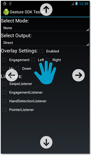

| Snapdragon SDK Reference API |
|
| Snapdragon SDK Reference API |
|
public class OverlayPreferences
extends java.lang.Object
The Overlay Preferences class is used to set the Overlay display preferences. This sets the desired visual feedback to be displayed to the user.
After an OverlayPreferences object is modified, the GestureDeviceManager's
GestureDeviceManager.setOverlayPreferences(OverlayPreferences) must
be called with the GestureDeviceManager instance to update the behavior.
The default preferences is set as enabled and configured to display all arrow icons: left, right, up, and down as well as engagement icon.
Hide Overlay
OverlayPreferences(false, 0);
Show Left and Right Icons Only
OverlayPreferences(true, LEFT | RIGHT);
Show Up, Down, Engagement
OverlayPreferences(true, UP | DOWN | ENGAGEMENT);
The following is the default Overlay. In this example, an engagement event of 100% confidence has been detected.

If the gesture mode does not support a particular swipe but it is turned on,
the animation for that swipe will not be displayed. For example, if
GestureMode.NEAR_GESTURE is the selected gesture mode and Left,
Right, Up, Down, and Engagement are all turned on, the only arrows the
Overlay can display is left or right. This is because the mode can only
detect left or right swipes so the other arrow displays is never triggered.
When in GestureMode.ENGAGEMENT_GESTURE mode, the white arrows will
not be displayed until the engagement confidence is 100%.
When a swipe is detected, visual feedback is given to the user. The overlay will automatically disappear after a short period of time.
| Modifier and Type | Field and Description |
|---|---|
static int |
DOWN
The Constant DOWN.
|
static int |
ENGAGEMENT
The Constant ENGAGEMENT.
|
static int |
LEFT
The Constant LEFT.
|
static int |
RIGHT
The Constant RIGHT.
|
static int |
UP
The Constant UP.
|
| Constructor and Description |
|---|
OverlayPreferences()
Instantiates a new overlay preferences.
|
OverlayPreferences(boolean enabled,
int flags)
Instantiates a new overlay preferences.
|
| Modifier and Type | Method and Description |
|---|---|
void |
enable(boolean enabled)
Sets the enabled field.
|
int |
getFlags()
Return the bitmask of the visual indicators show settings.
|
boolean |
isEnabled()
Checks if is enabled.
|
void |
setShowDown(boolean show)
Set showDown setting.
|
void |
setShowEngagement(boolean show)
Set showEngagement setting.
|
void |
setShowRight(boolean show)
Set showRight setting.
|
void |
setShowUp(boolean show)
Set showUp setting.
|
boolean |
showDown()
Return showDown setting.
|
boolean |
showEngagement()
Return showEngagement setting.
|
boolean |
showLeft()
Return showLeft setting.
|
void |
showLeft(boolean show)
Set showLeft setting.
|
boolean |
showRight()
Return showRight setting.
|
boolean |
showUp()
Return showUp setting.
|
void |
update(boolean enabled,
int flags)
Update the overlay preferences.
|
public static final int LEFT
public static final int RIGHT
public static final int UP
public static final int DOWN
public static final int ENGAGEMENT
public OverlayPreferences()
public OverlayPreferences(boolean enabled,
int flags)
Examples: OverlayPreferences(false, 0); // hide overlay OverlayPreferences(true, LEFT | RIGHT); // show only left and right arrows OverlayPreferences(true, UP | DOWN | ENGAGEMENT); // show up, down, engagement
enabled - Flag to indicate whether overlay is enabled or not.flags - The bitmask for which visual indicators are visible. See
example.public void enable(boolean enabled)
enabled - Flag to indicate whether overlay is enabled or not.public void update(boolean enabled,
int flags)
enabled - Flag to indicate whether overlay is enabled or not.flags - The bitmask for which visual indicators are visible. See
example.public boolean isEnabled()
public boolean showLeft()
public void showLeft(boolean show)
public boolean showRight()
public void setShowRight(boolean show)
public boolean showUp()
public void setShowUp(boolean show)
public boolean showDown()
public void setShowDown(boolean show)
public boolean showEngagement()
public void setShowEngagement(boolean show)
public int getFlags()